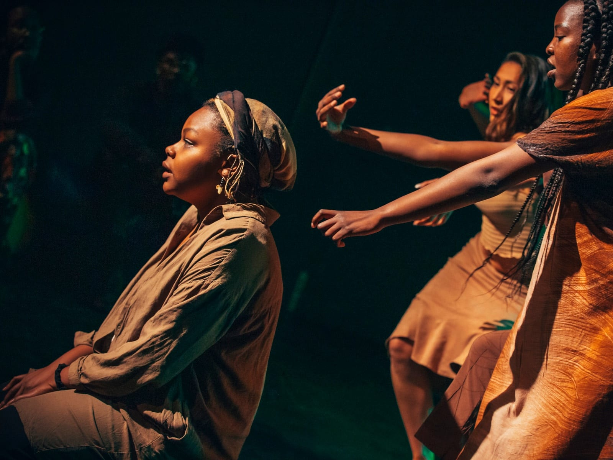

Art & Culture Projects
Assimilate


Assimilate is a storytelling-driven piece that uses movement, song, soundscapes and visuals to represent what assimilation is versus integration. It does this by exploring themes of language, identity, belonging, migration, detachment and community. The show explored these themes through the voice of four women.
- Creator & ProducerDaisy Nduta
- Other rolesSound Recording, Design & Mix
- Year2019
- Presented asImmersive work — Melbourne Fringe Festival, 2019
- AwardYoung Creatives Award, 2019